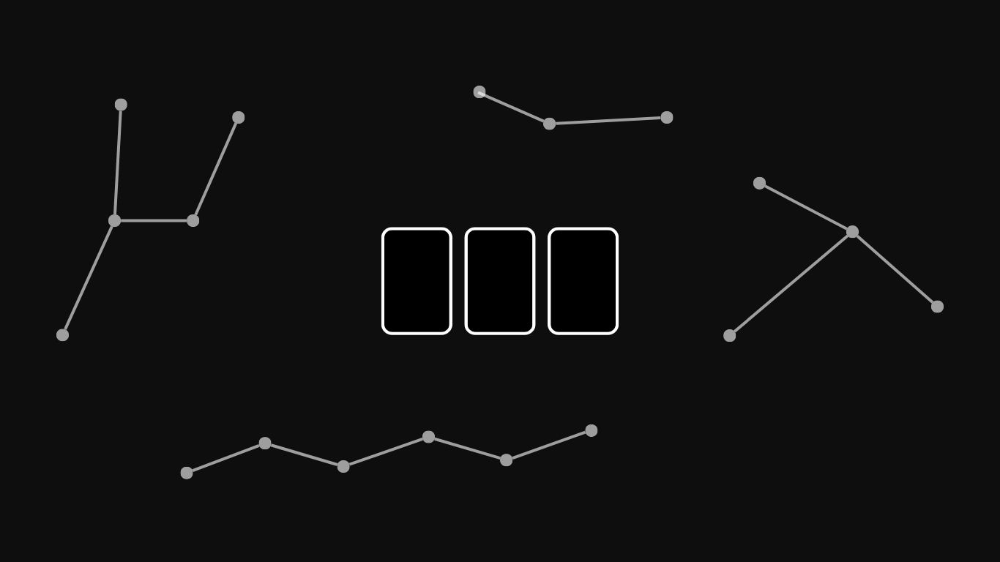
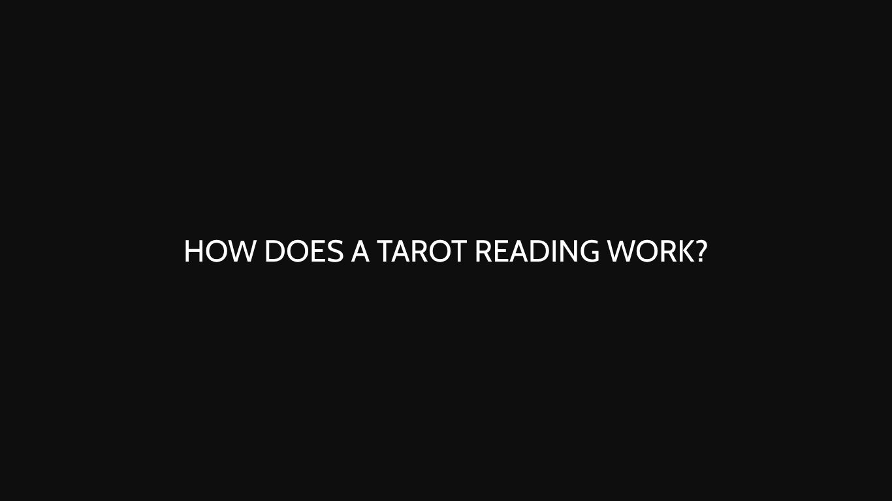

What is T'NOIR TAROT
What the noir approach to tarot actually means, why the readings are direct instead of comforting, and what to expect from a session.
Read the postBlog
Short pieces on how T'NOIR TAROT reads, what a session actually looks like, and the thinking behind the noir approach to tarot.

What the noir approach to tarot actually means, why the readings are direct instead of comforting, and what to expect from a session.
Read the post
From the question you bring, to drawing cards, interpretation, and delivery — how a T'NOIR TAROT reading is structured, and what stays in your hands.
Read the post